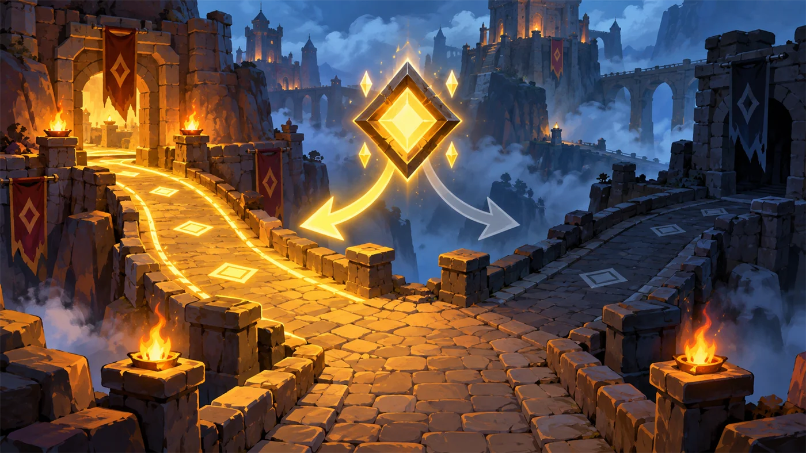

故事：矮人们围了上来。你握紧长剑，却发现一件怪事——
眼前的敌人时有时无：有时候空荡荡一片，有时候又挤着好几个。
要是不管有没有敌人都挥剑，你只会对着空气乱砍，把自己累个半死。
这一战，你得学会先看一眼，再决定砍还是歇。
扣哒考级 · GESP PYTHON 一级 · 第 5 单元 | 烛火岗哨 CANDLEWATCH OUTPOST
岔路口的抉择 分支结构：让程序学会做选择
Branching Structure · if / elif / else

安雅
红发队长 · 你的旅伴
岗哨外的山道在一处崖壁前分成两条：左边向上，通往瞭望台；右边向下，通往海边。
雾很重，看不清前面有什么。
安雅把手里的火把递给你：看清楚再走。前面是敌人，就往左绕；前面是空路，就直着下去。 程序也该这么聪明——先看，再决定。
安雅把手里的火把递给你：看清楚再走。前面是敌人，就往左绕；前面是空路，就直着下去。 程序也该这么聪明——先看，再决定。
安雅 · 红发队长
上一单元的顺序结构只会'一条道走到黑'。
这一单元我们给它装上一双眼睛——先判断条件，再决定走哪条路。
这是三大结构里最像"思考"的一个。
assets/illustrations/py-L1-05-00_crossroads_dawn.webp
【配图位】破晓时分的哨外岔路口：两条路在石碑前分开，左边的路通向发亮的宝石堆、右边那条隐没在幽蓝尖刺丛里；石碑上刻着两个方向标记，英雄站在路口中间停下脚步，安雅在身后点火把照亮路牌。
0 单元导语与目标
Unit Overview
1学完这个单元，你将能……
- 说清"分支结构"的作用与执行方式
- 用
if写出单分支判断 - 用
if-else处理"二者必选其一" - 用
if-elif-else处理多种情况 - 在分支里再写分支（嵌套判断）
- 用条件表达式一行写完简单的判断
2对标 GESP 考纲（Python 一级）
- （7）了解程序的顺序结构、选择结构、循环结构
- （9）掌握比较运算符、算术运算符、逻辑运算符的基本概念及基础应用
- 考核目标：能够独立完成包含分支语句、循环语句等比较综合的案例
- 考核目标：使用分支循环嵌套结构
1 为什么需要分支
Why We Need Branching
先看一段"没有分支"的代码。假设英雄要往前巡逻，路上可能有敌人：
没有分支的尴尬
Python
hero.moveRight() # 如果前面有敌人，这一下就撞上去了
hero.moveRight()
hero.moveRight()问题很明显：程序只会傻乎乎地按顺序走，它不知道"前面有没有敌人"， 更不会因为"有敌人"而改主意。
要让它聪明起来，就得给它一双"眼睛"和一套"判断规则"——这就是分支结构（选择结构）：
分支结构的本质：
先判断一个条件，再根据条件的真假，决定执行哪一段代码。
条件成立（True）→ 走这一条路；条件不成立（False）→ 走另一条路（或者什么都不做）。
条件成立（True）→ 走这一条路；条件不成立（False）→ 走另一条路（或者什么都不做）。
安雅 · 红发队长
我当新兵那会儿，最喜欢岔路口的一条规矩：看不清，就别跑。程序里也一样——条件写对了，英雄才能安全出门；条件写反了，它会一头撞进火堆。
所以每次写
if，我都会先问自己一句：这个条件，真的问对了吗？
2 if：单分支
The if Statement
2.1 if 的写法
图 2（SVG）：
if 单分支——条件成立才做，不成立就跳过
if 的基本写法
Python
enemy = hero.findNearestEnemy()
if enemy:
hero.attack(enemy)
hero.moveRight() # 这一行不受影响，照常执行这段代码的运行逻辑是：
- 先算出
enemy是什么； - 如果
enemy有值（也就是"找到了敌人"），就执行缩进的那一行； - 如果没找到（
enemy是None），缩进的部分整段跳过； - 无论哪种情况，最后一行
hero.moveRight()都会执行。
2.2 冒号与缩进
Python 的 if 有两个"必须"：
| 要素 | 写法 | 作用 |
|---|---|---|
冒号 : | if 条件: | 告诉 Python"下面是要执行的代码块" |
| 缩进 | 下一行起向右缩进 4 个空格 | 告诉 Python"这几行属于这个 if" |
Python 的独门规矩：很多语言用大括号
{ } 表示代码块，
Python 用缩进。缩进相同的几行，属于同一个块。
缩进错了，代码的归属就错了——这是 Python 最容易出错的地方。

扣哒鸭 · 调试官
记住两句话：冒号不能少，缩进不能歪。
少了冒号，Python 不知道你要开一个代码块；缩进错了，代码就跑到别人家里去了。
这两件事我每年都要吼上千遍。

服部半藏 · 赤影武士
忍者的每一步只有两种状态：该动，和不该动。该动的时候动，那叫本事；不该动的时候忍住不动，那才叫修行。
你看那个
if——条件不成立时它什么都不做。
那不是偷懒，那是克制。
3 if-else：双分支
if-else Statement
if 只能管"成立时做什么"。如果"不成立时"也要做点什么，就要加上 else：
图 3（SVG）：
if-else 双分支——两条路必走其一
if-else 实战
Python
enemy = hero.findNearestEnemy()
if enemy:
hero.attack(enemy) # 有敌人 → 打
else:
hero.moveRight() # 没敌人 → 往前走
判断奇偶
Python
n = int(input("请输入一个整数："))
if n % 2 == 0:
print("这是偶数")
else:
print("这是奇数")运行过程 请输入一个整数：7
OUTPUT 这是奇数
OUTPUT 这是奇数
缩进要对齐：
if 和 else 必须顶格对齐（在同一个缩进层级），
它们下面的代码块分别比它们多缩进一层。若把 else 缩进了，Python 会报语法错误。
4 if-elif-else：多分支
if-elif-else
4.1 多分支的写法
如果情况不止两种（比如成绩分成优良中差），就要用 elif（else if 的缩写）：
图 4（SVG）：多分支从上往下依次判断，命中即停
成绩等级
Python
score = int(input("请输入成绩："))
if score >= 90:
print("优秀")
elif score >= 60:
print("及格")
else:
print("不及格")运行过程 请输入成绩：75
OUTPUT 及格
OUTPUT 及格
4.2 顺序不能颠倒
多分支是从上往下依次检查的：只要某一条成立，就执行它，然后整个分支结构立刻结束， 后面的条件根本不会被检查。所以条件的顺序很重要。
经典错误示例：把上面的判断写成这样——
那么输入 95 时，第一条
规则：范围更窄、要求更严的条件要写在前面。
if score >= 60: print("及格")elif score >= 90: print("优秀")那么输入 95 时，第一条
95 >= 60 就成立了，程序会输出"及格"，
根本轮不到检查"优秀"。规则：范围更窄、要求更严的条件要写在前面。
5 嵌套分支
Nested Branches
分支里面还可以再写分支——就像先判断"是白天还是夜晚"，再判断"白天有没有敌人"。
嵌套判断
Python
hp = int(input("请输入血量："))
if hp > 0:
if hp < 30:
print("危险！需要治疗")
else:
print("状态良好")
else:
print("英雄倒下了")运行过程 请输入血量：20
OUTPUT 危险！需要治疗
OUTPUT 危险！需要治疗
图 5（SVG）：嵌套分支的层级关系
读代码的技巧：遇到嵌套判断，先把缩进相同的行看成一组。
同一缩进层级的
if / elif / else 是一家人；
更靠右缩进的那些，属于上一层。
6 条件表达式（三目）
Conditional Expression
如果分支简单到"成立取这个值、不成立取那个值"，可以用一行写完，这叫条件表达式， 也叫三目运算（因为它有三个部分）。
| 写法 | 说明 |
|---|---|
A if 条件 else B | 条件成立取 A，不成立取 B |
三目运算
Python
a = 7
b = 12
# 用 if-else 写
if a > b:
bigger = a
else:
bigger = b
print(bigger)
# 用条件表达式写（一行搞定）
bigger = a if a > b else b
print(bigger)
# 放进 print 里更简洁
print("较大的是", a if a > b else b)OUTPUT 12
12
较大的是 12
12
较大的是 12
读法：
a if a > b else b 读作
"如果 a > b 就取 a，否则取 b"。
注意 Python 的特殊之处——判断条件写在中间，而不是最前面。
图 6（SVG）：条件表达式的三部分结构
7 代码实战
Level Practice
关卡
Else之战
进入关卡 →

assets/stages/py-L1-05-stage1_else_battle.webp
【关卡截图位】请把《Else之战》的游戏画面截图放到此处（放入 assets/stages/ 目录，文件名为 py-L1-05-stage1_else_battle.webp）。
思路：看上面的关卡实况——敌人时有时无，所以你要先看一眼，再决定砍还是歇。
用 if 判断"附近有没有敌人"：有就攻击，没有就休息。
else 管的正是"条件不成立"的那一半情况。
重点示例：if / else 的骨架
Python
enemy = hero.findNearestEnemy() # 先看一眼
if enemy: # 有敌人
hero.attack(enemy)
else: # 没敌人
hero.say("I'm safe.")要点 两条路必走其一：要么打，要么歇，绝不会"都不做"
为什么
if enemy: 不写成 if enemy == True:？
因为当 enemy 里装着敌人时，它本身就代表"有"；
装的是空值 None 时，就代表"没有"。
Python 允许你直接把变量放进条件里——有就是真，空就是假。
想一想：如果把
去扣哒世界闯这一关 →
else 那一段删掉会怎样？
程序不会报错，英雄也不会倒下——但当周围没有敌人时，它会什么也不做。
分支不是必须写 else，写不写取决于"条件不成立时，你想不想做点什么"。

assets/illustrations/py-L1-05-01_crossroads.webp
【配图位】雾中的岗哨岔路口：两块木质路牌立在崖边，一名新兵提着灯在岔口犹豫——一条路被灯光照亮、一条路隐入阴影；冷蓝色雾气与暖橙色灯光形成对比。
8 常见陷阱
Common Pitfalls & Debugging

扣哒鸭 · 调试官
分支这章的错，九成出在缩进和符号上。
下面五条你要是全避开了，说明你已经能自己写判断逻辑了。
1
忘了写冒号。写
if a > b 直接换行。
扣哒鸭：冒号是"我要开一个代码块"的信号。
报错信息是
SyntaxError: expected ':'——看到这句，第一件事就是看行尾有没有冒号。正确写法：
if a > b:2
缩进不一致。有的行缩进 4 个空格，有的缩进 2 个，还有的用 Tab。
扣哒鸭：同一个块里的缩进必须完全一致。
建议统一用 4 个空格，别混用 Tab。Python 对缩进的严格程度，会让你怀疑人生。
正确做法：选中代码块，统一用 4 个空格缩进
3
把
== 写成了 =。写 if a = 5:。
扣哒鸭：条件里比相等，必须用两个等号
==。
一个等号是赋值，不能放进条件里。正确写法：
if a == 5:4
elif 顺序写反了。把"够 60 分及格"写在了"够 90 分优秀"前面，导致 95 分也被判成"及格"。

扣哒鸭：多分支是从上往下、命中即停。
条件写得越宽，越要往后放。先严后松，才不会误伤。
正确写法：把范围更窄的条件写在前面（90 分那条在前）
5
else 后面加了条件。写
else a > b:。
扣哒鸭：
else 的意思是"其他所有情况"，它不带条件。
要加条件就用 elif。别把两个词的活儿混成一锅。正确写法：
elif 条件: 或 else:（不带条件）9 题目练习
Practice
下面 7 道题中，前 3 道改编自 GESP 真题，后 4 道为原创练习题。
改编自 2026 年 9 月 · Python 一级 · 第 7 题单选题
下列 Python 代码中，
a * a + b * b == c * c 可替换为（ ）。1 a = int(input())
2 b = int(input())
3 c = int(input())
4
5 if a * a + b * b == c * c:
6 print("1")
A.a ** 2 + b ** 2 == c ** 2
B.a ** 2 + b ** 2 = c ** 2
C.a ** a + b ** b = c ** 2
D.a ** a + b ** b == c ** c
B.a ** 2 + b ** 2 = c ** 2
C.a ** a + b ** b = c ** 2
D.a ** a + b ** b == c ** c
查看答案与详解
答案：A。
B、C 项用了单等号，那是赋值语句，语法上就错了；C、D 项把指数也换了，含义完全变了。
对应小节2.2 冒号与缩进（条件写法）；第 3 单元运算符。
a * a 等价于 a ** 2，
且判断相等必须用双等号 ==。B、C 项用了单等号，那是赋值语句，语法上就错了；C、D 项把指数也换了，含义完全变了。
对应小节2.2 冒号与缩进（条件写法）；第 3 单元运算符。
改编自 2026 年 9 月 · Python 一级 · 判断题第 4 题判断题
下列 Python 代码执行时如果先后输入 10 和 10，则将输出
10小于等于10。（ ）1 N = int(input())
2 M = int(input())
3
4 if N > M:
5 print(f"{N}大于{M}")
6 else:
7 print(f"{N}小于等于{M}")
查看答案与详解
答案：正确（√）。N = 10、M = 10，
易错点：相等的情况落在 else 里，所以 else 的措辞是"小于等于"而不是"小于"。
对应小节3 if-else 双分支。
10 > 10 不成立 → 走 else 分支，
输出 10小于等于10。易错点：相等的情况落在 else 里，所以 else 的措辞是"小于等于"而不是"小于"。
对应小节3 if-else 双分支。
改编自 2026 年 9 月 · Python 一级 · 判断题第 5 题判断题
如下 Python 代码如果输入大于 0 的整数，则可以求 1 到 N 之和。（ ）
1 N = int(input("请输入正整数："))
2 tot = 0
3
4 while N > 0:
5 tot += N
6 N += -1
7 print(tot)
查看答案与详解
答案：正确（√）。循环每次把当前的 N 加进 tot，再把 N 减 1，直到 N 归零；
于是 tot = N + (N-1) + … + 1，正是 1 到 N 之和。
提示：本题涉及下一单元的
对应小节1 为什么需要分支（条件的地位）。
提示：本题涉及下一单元的
while 循环——
这里的 N > 0 就是一个循环条件，
和本单元学过的"判断条件"是同一套东西。对应小节1 为什么需要分支（条件的地位）。
原创练习题单选题
下列 Python 代码执行后，输出的结果是（ ）。
1 a = 5
2 if a > 3:
3 print("A")
4 if a > 8:
5 print("B")
6 print("C")
A.A B C（分三行）
B.A C（分两行）
C.C（只有一行）
D.A（只有一行）
B.A C（分两行）
C.C（只有一行）
D.A（只有一行）
查看答案与详解
答案：B。这是两个独立的 if，不是 if-else 关系：
第一个
第二个
最后一行不受任何分支影响，照常输出 C。
易错点：两个独立 if 会各自判断；而 if-elif 只会执行命中的那一条。看清题目写的是哪种。
对应小节2 if 单分支；4 多分支。
第一个
5 > 3 成立 → 输出 A；第二个
5 > 8 不成立 → 跳过；最后一行不受任何分支影响，照常输出 C。
易错点：两个独立 if 会各自判断；而 if-elif 只会执行命中的那一条。看清题目写的是哪种。
对应小节2 if 单分支；4 多分支。
原创练习题单选题
下列 Python 代码执行后，输出的结果是（ ）。
1 score = 95
2
3 if score >= 60:
4 print("及格")
5 elif score >= 90:
6 print("优秀")
7 else:
8 print("不及格")
A.及格 B.优秀 C.及格优秀 D.不及格
查看答案与详解
答案：A。多分支从上往下依次判断，命中即停：
正确写法：把更严格的条件放在前面——
口诀：先严后松。
对应小节4.2 顺序不能颠倒。
95 >= 60 首先成立，于是输出"及格"，后面那条"优秀"根本不会被检查。正确写法：把更严格的条件放在前面——
if score >= 90: 写在
elif score >= 60: 之前。口诀：先严后松。
对应小节4.2 顺序不能颠倒。
原创练习题编程题
题目要求：输入一个整数，判断它是正数、负数还是零，并输出对应文字（
正数 / 负数 / 零）。查看参考答案与要点
n = int(input("请输入一个整数："))
if n > 0:
print("正数")
elif n < 0:
print("负数")
else:
print("零")
要点：
① 三种情况正好用 if - elif - else 三段；
② else 兜住"既不是正数也不是负数"的情况，也就是零；
③ 也可以写成 elif n == 0:，但用 else 更简洁稳妥。
对应小节4 多分支。
原创练习题编程题
题目要求：输入两个整数 a 和 b，输出其中较大的那个数。（要求用条件表达式一行完成取值）
查看参考答案与要点
a = int(input("请输入第一个整数："))
b = int(input("请输入第二个整数："))
bigger = a if a > b else b # 条件表达式：成立取 a，否则取 b
print("较大的是：", bigger)
要点：
① 条件表达式写作 A if 条件 else B，条件是写在中间的；
② 如果 a 和 b 相等，会取 b，结果一样，不必额外处理；
③ 用普通 if-else 也能做对，但要注意别把较大/较小写反。
对应小节6 条件表达式。
10 本单元小结
Unit Summary

贺舒曼 · 镜中先知
分支结构，是程序第一次学会"看情况办事"。请把这三句话刻进脑子：if 管成立，else 管不成立，elif 管中间那些情况； 命中即停，顺序不能颠倒；缩进就是层级，冒号就是门槛。
下一单元的循环，其实就是'让分支反复发生'——你们很快就会发现，两者是一家。
你在岔路口收获了什么
- 分支结构——先判断条件，再决定执行哪一段代码；它是三大结构里最像"思考"的一个。
- if——条件成立才执行，不成立就整段跳过。
- if-else——两条路必走其一。
- if-elif-else——多路选择，从上往下判断，命中即停；先严后松。
- 嵌套分支——分支里再写分支，靠缩进分层。
- 条件表达式——
A if 条件 else B，一行取两个值之一。 - 语法铁律——冒号不能少，缩进不能歪，比较用
==不用=。